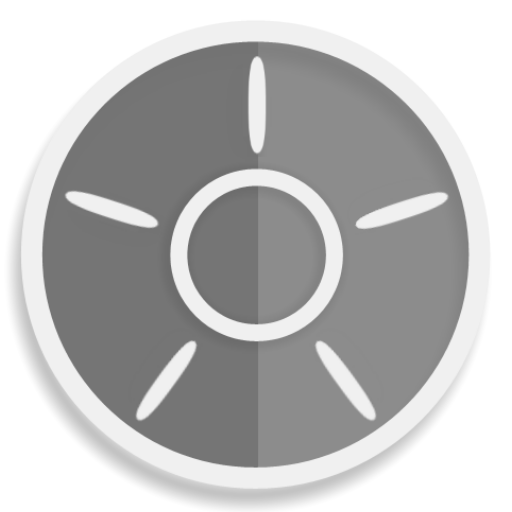
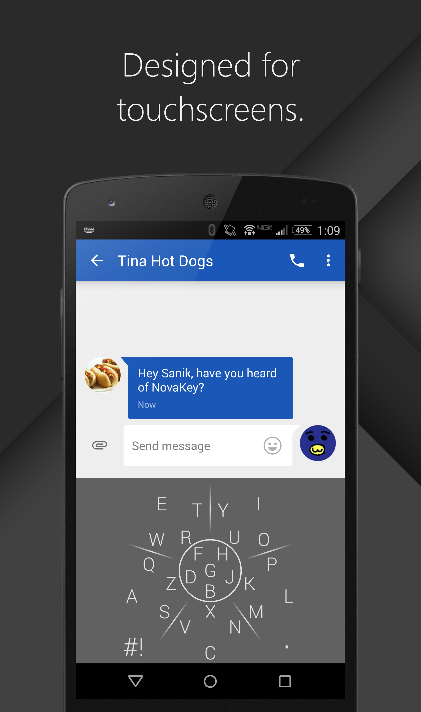
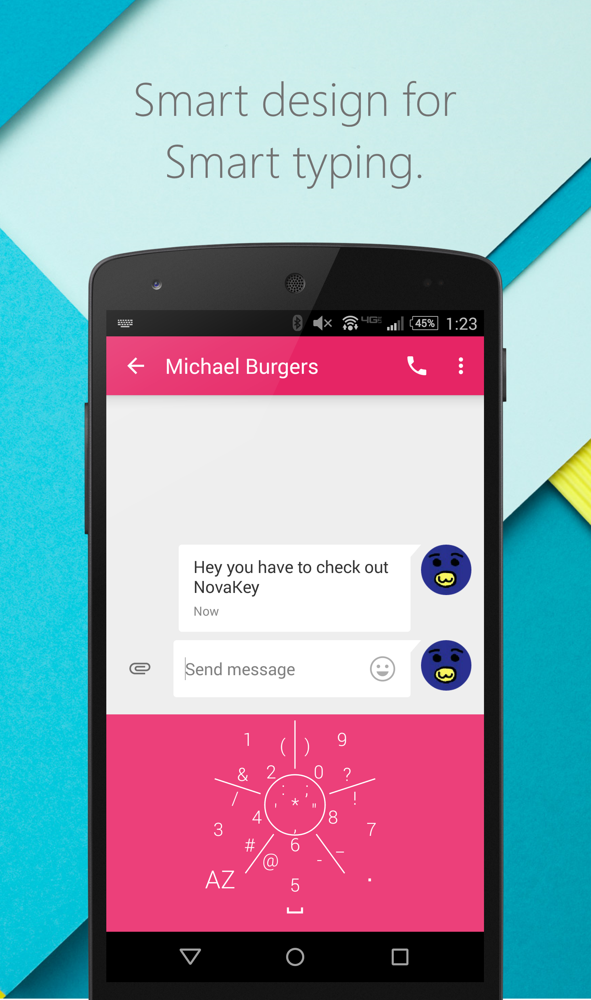
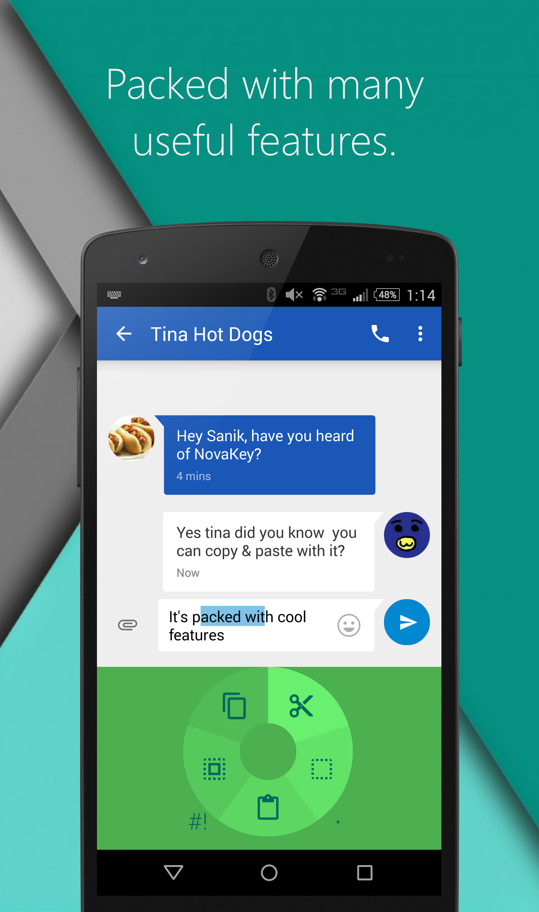
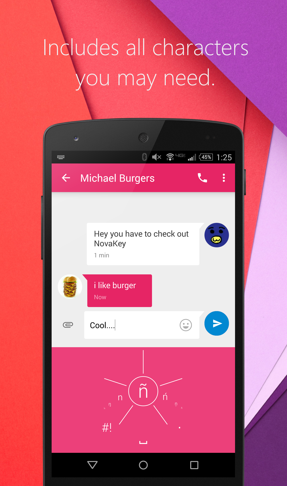
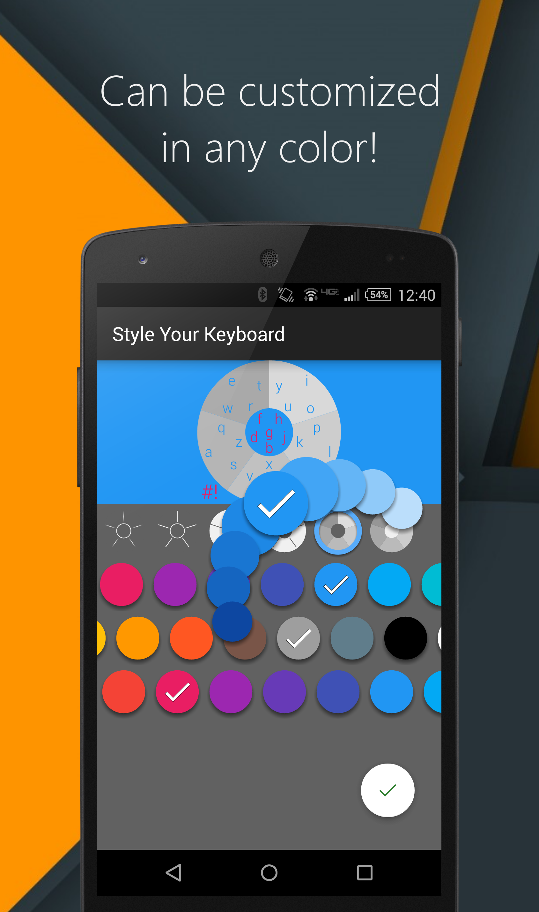
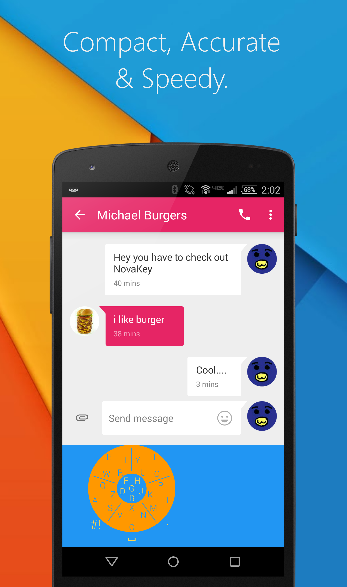

About Me
Hi! Welcome to my site!
My name is Viviano and I am a second year student at Northeastern University majoring in Computer Science and Finance. I love developing software, especially for Android and iOS.
I've been coding since I was a freshman in high school, but the bulk of my programming experience happened after junior year. This page includes some of the projects I have worked on since I started.
Fun Facts:I speak Spanish fluently and some Mandarin
I prefer old music
I rarely (very very rarely) get bored
My favorite sport is soccer
I play piano
Links to my GitHub, LinkedIn, Google+ & Email are located on the top right. You may also email me directly at cantu.v@husky.neu.edu
Hi! Welcome to my site!
My name is Viviano and I am a second year student at Northeastern University majoring in Computer Science and Finance. I love developing software, especially for Android and iOS.
I've been coding since I was a freshman in high school, but the bulk of my programming experience happened after junior year. This page includes some of the projects I have worked on since I started.
Fun Facts:
Links to my GitHub, LinkedIn, Google+ & Email are located on the top right. You may also email me directly at cantu.v@husky.neu.edu
Projects
NovaKey - Android App

This is my pride and joy. I have been working on this app since September of 2014. I always found the idea of QWERTY keyboards on touchscreens backwards. Since I had some Java experience I decided to jump in and try it for myself.
The keyboard consists of six areas, five outer ones and one inner. Each area is composed of one main, tappable, key and various other, swipeable, keys. Because every key is a unique gesture there it is much harder to make mistakes.
Because of it's compact design, NovaKey includes many useful features that most generic QWERTY keyboards don't have. These include:Resizeable and movable
The ability to move the cursor
The ability to copy, cut, paste & select/deselect all text
All the special keys you may need
Customizable with many colors and themes
This project is currently ongoing. You can download it using the link below. There is also a Google+ beta testing community accessible through the play store listing.

This is my pride and joy. I have been working on this app since September of 2014. I always found the idea of QWERTY keyboards on touchscreens backwards. Since I had some Java experience I decided to jump in and try it for myself.
The keyboard consists of six areas, five outer ones and one inner. Each area is composed of one main, tappable, key and various other, swipeable, keys. Because every key is a unique gesture there it is much harder to make mistakes.
Because of it's compact design, NovaKey includes many useful features that most generic QWERTY keyboards don't have. These include:






This project is currently ongoing. You can download it using the link below. There is also a Google+ beta testing community accessible through the play store listing.
Place Picker/Finder
During the summer of 2015 I interned at a small app start-up. I was given a name for an app "Rate the Wait". The app was a rating tool like yelp, but would only contain quantitative data such as how long is the wait, how busy it is, how expensive it is, etc.
From that project I developed the Android UI element I am most proud of. I was using the Google Places & Maps API to find and display venues on the app and discovered that Google organizes all of the places in it's database by categories. I decided to take advantage of this and created a picker that allows users to easily find all these categories.
Below are two video demos of the prototype for "Rate the Wait". The first video shows mock ups of some of the UI elemets that were planned for the app. And the second video displays a more complete place picker with icons.
I am currently working on making the Place Picker more modular and publish it on Android Arsenal, so that other Android developers can add a customized version of it to their own apps. Below is the GitHub link to the current work in progress.
During the summer of 2015 I interned at a small app start-up. I was given a name for an app "Rate the Wait". The app was a rating tool like yelp, but would only contain quantitative data such as how long is the wait, how busy it is, how expensive it is, etc.
From that project I developed the Android UI element I am most proud of. I was using the Google Places & Maps API to find and display venues on the app and discovered that Google organizes all of the places in it's database by categories. I decided to take advantage of this and created a picker that allows users to easily find all these categories.
Below are two video demos of the prototype for "Rate the Wait". The first video shows mock ups of some of the UI elemets that were planned for the app. And the second video displays a more complete place picker with icons.
iOS App
During my internship I was also tasked with developing an iOS app for the company. The app was a portal for finding doctors and making appointments. My task was to develop the iOS client version, the rest of my colleagues developed the art assets and the back end to the app. We used the REST API to communicate between the client and the server.
During my internship I was also tasked with developing an iOS app for the company. The app was a portal for finding doctors and making appointments. My task was to develop the iOS client version, the rest of my colleagues developed the art assets and the back end to the app. We used the REST API to communicate between the client and the server.
Battleship
I created this battleship game during senior year in high school for my AP Computer Science class. For this game I created a very simple 2D game engine in Java and used that engine to make the battleship game. I'm most proud of the three different AI you can play against(Easy, Medium & Hard).
Below are two links, one GitHub link to the source code and one button to download a jar file. Just open the file and play!
How to Play:Drag & drop ships to set the initial position of your ships
Right click ships to rotate them
Left click to fire
I created this battleship game during senior year in high school for my AP Computer Science class. For this game I created a very simple 2D game engine in Java and used that engine to make the battleship game. I'm most proud of the three different AI you can play against(Easy, Medium & Hard).
Below are two links, one GitHub link to the source code and one button to download a jar file. Just open the file and play!
How to Play:
Small Java Calculator
This was a small project I randomly decided to start one day when I became interested in how programming languages worked. This is a very light weight Java applet which contains a math parser. You can enter things like "2 + sin(pi) / floor(1 / 3)" and it will parse it and calculate the result. In the future I plan on adding the ability for the calculator to parse algebraic impressions and solve single variable equations.
Below is a link to the GitHub repository with the code to this project.
This was a small project I randomly decided to start one day when I became interested in how programming languages worked. This is a very light weight Java applet which contains a math parser. You can enter things like "2 + sin(pi) / floor(1 / 3)" and it will parse it and calculate the result. In the future I plan on adding the ability for the calculator to parse algebraic impressions and solve single variable equations.
Below is a link to the GitHub repository with the code to this project.
Java Number to English
This was another small project I decided to take on. It is a very simple console application which takes in any number and outputs that number in english.
Below is a link to the GitHub repository with the code to this project.
This was another small project I decided to take on. It is a very simple console application which takes in any number and outputs that number in english.
Below is a link to the GitHub repository with the code to this project.
Minecraft Bukkit Plugins
During my junior year in high school I became very interested in both the Game Minecraft & Coding. Minecraft can be played online and the Minecraft community took advantage of this and decided to make a type of server, a Bukkit Server, which can alter the game by loading plugins written in Java. When I discovered this I dove in and tried my hand and developed two plugins.
Cheese
The game of minecraft consists of various blocks. One of these blocks is the useless sponge block. This block has no use since the developer decided against it. However, it is still included in the game. I found the looks to resemble cheese and created a plugin added cheese to the game. This cheese could only be created by putting milk in cauldron and letting it sit for some time. Eventually the milk would age into cheese! Which was edible, of course.
Baking
In my opinion, getting bread in Minecraft is too easy. You get three pieces of wheat and simply craft them together into bread. It's unrealistic! and the same goes for cookies and other baked goods in the game. To change this I created a plugin which restricted this easy access to wheat products and made it more challenging and fun.
The new process went like so: collect wheat, place it inside a cauldron and grind it(hit it with a stick) until flour pops out. Then mix the flour with water & yeast(made with wheat and mushrooms), to create dough. Finally, bake the dough and make bread! Likewise, you could mix flour with butter, milk & chocolate to create cookie dough. Oh yeah, and butter could be gotten by placing a milk bucket on the floor and churning it(hit it with a stick) until it turns to butter.
During my junior year in high school I became very interested in both the Game Minecraft & Coding. Minecraft can be played online and the Minecraft community took advantage of this and decided to make a type of server, a Bukkit Server, which can alter the game by loading plugins written in Java. When I discovered this I dove in and tried my hand and developed two plugins.
The new process went like so: collect wheat, place it inside a cauldron and grind it(hit it with a stick) until flour pops out. Then mix the flour with water & yeast(made with wheat and mushrooms), to create dough. Finally, bake the dough and make bread! Likewise, you could mix flour with butter, milk & chocolate to create cookie dough. Oh yeah, and butter could be gotten by placing a milk bucket on the floor and churning it(hit it with a stick) until it turns to butter.